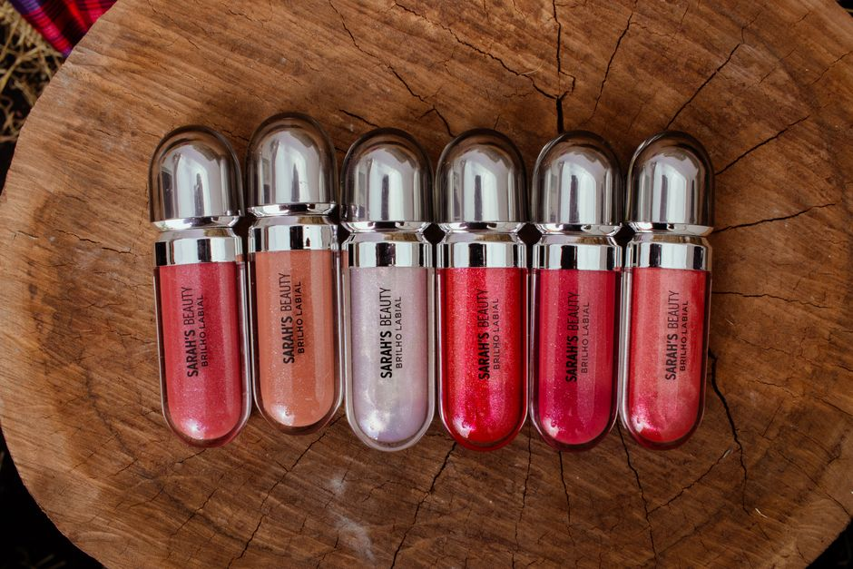
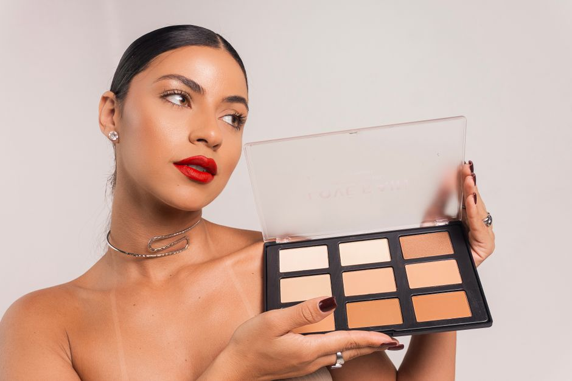
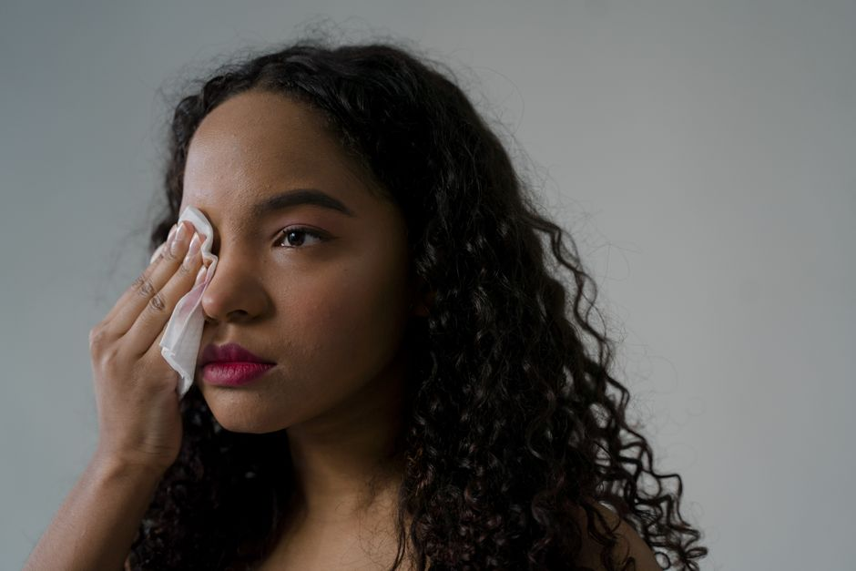
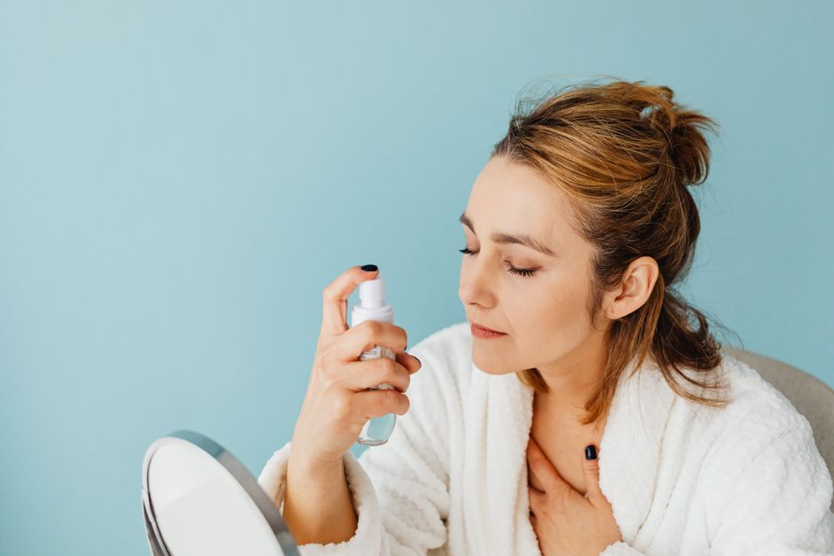
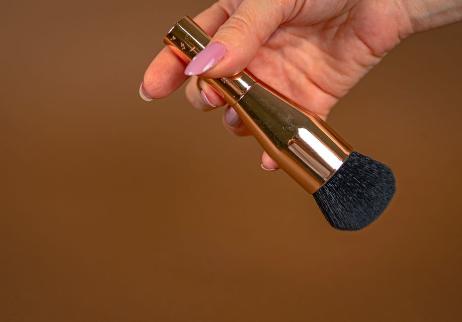
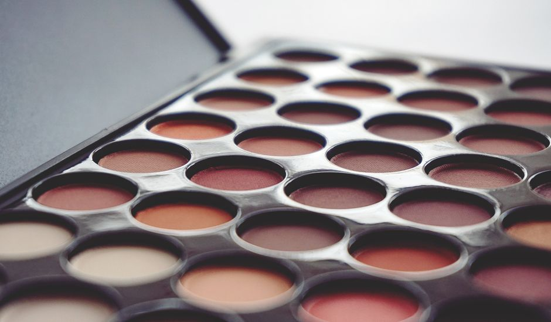

Paleta de polvos correctores y neutralizadores de ojeras con 6 tonos y aplicador de brocha precisión
Paleta de 6 tonos correctores para ojeras + brocha de precisión. Adapta el tono perfecto a tu piel. Ilumina y neutraliza ojeras eficazmente.
0 vistas

Paleta de iluminadores en polvo con 12 tonos nacarados y aplicador esponja biselada
Paleta de 12 iluminadores en polvo con tonos nacarados. Acabado radiante y natural. Con aplicador esponja biselada. ¡Descubre tu brillo perfecto!
0 vistas

Paleta de labiales líquidos mate de larga duración con 24 tonos y aplicador de precisión
Paleta de 24 labiales líquidos mate de larga duración. Acabado impecable, sin transferencia. Todos los tonos que necesitas en un solo producto.
0 vistas

Paleta de contorno y bronceador en polvo con 8 tonos y aplicador de brocha dual
Paleta de contorno y bronceador con 8 tonos profesionales + brocha dual. Esculpe y broncea tu rostro con precisión. ¡Glow perfecto garantizado!
0 vistas

Removedor de maquillaje en toallitas desmaquillantes con ácido hialurónico
Toallitas desmaquillantes suaves que limpian y hidratan en un paso. Fórmula con ácido hialurónico. ¡Desmaquillaje fácil y rápido!
0 vistas

Fijador de maquillaje en spray para fijar y prolongar la duración del maquillaje
Fijador en spray que prolonga la duración de tu maquillaje. Aplicación rápida y resultados profesionales. ¡Descubre el secreto para un look impecable!
0 vistas

Brocha de maquillaje retráctil con estuche de viaje
Brocha de maquillaje retráctil con estuche de viaje. Compacta, práctica y portátil. Perfecta para llevar en tu bolso. ¡Descúbrela ahora!
0 vistas

Paleta de sombras de ojos con 120 colores y espejo incorporado
Paleta profesional de 120 colores de sombras con espejo incorporado. Texturas suaves y fáciles de difuminar para looks naturales y dramáticos.
1 vistas